Measuring tank performance
Updated 2020-08-11
Over-Powered (OP) tanks are maybe the 2nd most popular topic on Blitz YouTube videos and online chats - right after “the Matchmaker”. I have long held the view that if a tank is “OP”, this has to be visible in statistics. Otherwise there are only qualitative / subjective views left and those come in all sorts.
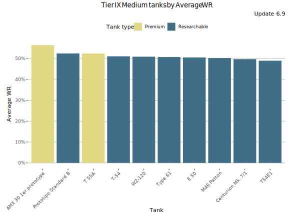
People are susceptible to all kinds of biases in their thinking. Getting ammoracked by a Death Star will raise suspicion that the Death Star is an OP tank even though it is actually the worst tier X tank. Anecdotal experiences distort opinions and no one remembers those countless battles where a Death Star was at the bottom of the list. Therefore, tank performance is not a thing that we should vote about, but a thing we can measure with statistics.
How to measure performance in the game?
Let’s discuss first how to measure performance in the game. I am a proponent of win rate being the best measure for performance (player or tank) - not average damage, not average kills, and not speed, not alpha damage or any other attribute or characteristics. The reason for choosing win rate over other variables is the fact that winning is the objective of the game and all the damage, kills, spotting etc. are just means to win the game. Why measure proxy variables when you can measure the final variable itself?
There are some caveats in using WR as a performance measure:
- It requires many battles for the WR to settle near one’s performance level due to both MM and RNG: It takes 400 battles to reach +/- 5% accuracy, 10000 battles to reach +/- 1% accuracy and whopping 1 million battles to reach 0.1% accuracy with 95% confidence level. Check this link at PC WoT forums for details.
- Platoon rate impacts on WR but cannot be separated well from the statistics since WG does not publish platoon rate per tank played, but just as a aggregate level over all the tanks. Platooning with a good player can lift one’s WR 5-15%.
- Career WR measures historical average, not one’s present performance level, and it reacts slowly once the player has lot (10k+) battles.
- WG’s new “newbie MM queue” has distorted the Career stats for rerollers big time. This distorts both tank and player average WR. (Just ignore global & career WR).
- Some tanks are more powerful than others. Comparing different players' WR in different tanks or global WR does not tell us much.
- Different tiers have different level of difficulty. Global / Average WR is close to useless for measuring player / tank performance.
- Stock tanks' performance is significantly lower compared to when maxed-out.
But other performance measures have issues too and can be gamed; Easiest way to increase average damage is to play more high tiers and more TDs, WN8 can be gamed by playing popular tech three tanks that are difficult for below average players and not too popular among the unicums.
Despite all the issues related to WR, I consider it the best performance measure over a large number of battles and in case of tanks, over large number of players since it measures directly the objective of the game (=to win battles). It is also a more understandable measure vs. somewhat abstract indexes. But I believe performance indicators like WN8 which are based on input stats (average damage, kills, spots) give a more accurate view of players' short-term performance (< 100 battles) than WR.
Now going back to the tank performance.
So Average WR it is then, right?
Not so fast. Average WR of a tank is a good starter, but it has its own biases. Let’s have a look at two tier IX mediums: AMX 30 1er prototype and Prototipo Standard B. Everything here is based on 6.9 data.
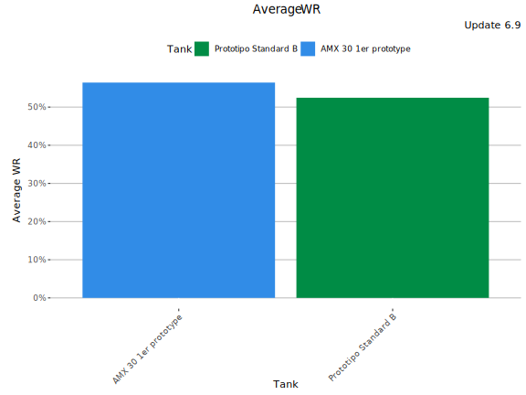
| Tank | Average WR | Players |
|---|---|---|
| Prototipo Standard B | 52.5% | 9 065 |
| AMX 30 1er prototype | 56.4% | 4 370 |
Both tanks have also been played by thousands of players, but the AMX seems to have significantly higher average WR. Many would be tempted to claim the AMX is a better tank than Standard B. But is it?
Tank performance is a different variable from player skill
Let us first consider a single player and the factors affecting the player’s chances to win one battle:
Chance of winning ~ player skill * tank performance + RNG + team performance - enemy team performance
Over a large number of battles the variables team performance and enemy team performance approach their respective averages and the impact of RNG approaches zero (“What RNG gives, RNG takes”). The more battles one plays in a tank, only two factors will influence one’s WR in it:
WR ~ player skill * tank performance
And to be more precise, player skill is average player skill in the tank in question. Platooning has been ignored here since unfortunately WG does not publish very usable platooning stats via their API.
Saying “any tank is OP in good players hands” is the same as saying “any car is fast in the hands of a good driver”. While a good driver can make better-than-average lap times with a slow car, a good driver does not make the car any faster, but is just … a good driver. Give the driver a faster car and they can drive even faster.
TL;DR. Tank performance and player skill are two separate things
Tanks have different playerbases
Let’s now go back to the AMX 30 1er prototype vs. Standard B example and compare the playerbases. I have chosen player average WR at the tier as a measure for “player skill”. And more precisely as measured during the update under study (i.e. not career WR). This eliminates couple of biases:
- WR during the update measures the player’s current performance unlike Career WR that measures the average historical performance (re-rollers vs. normal players)
- It measures player performance at the tier in question unlike average WR over all the tiers, and thus is not distorted by low-tier stats-padding
The plot below shows player WR distribution at tier IX (in any tank) for the both AMX 30 1er prototype and Standard B players. It is clear that the AMX 30 1er prototype is played by better players than Standard B. Stock tank battles (Standard B) have been filtered out based on an estimate of battles required to max-out the tank (139).
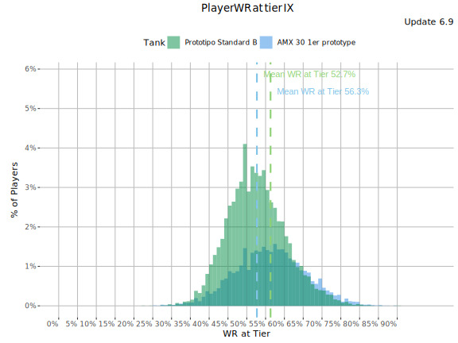
| Tank | Avg player WR at Tier IX |
|---|---|
| Prototipo Standard B | 52.7% |
| AMX 30 1er prototype | 56.3% |
While both the tanks have been played by thousands of players, the AMX is a premium tank whereas Standard B is a Tech Three tank. The players of the both the tanks are roughly equally experienced (see the histogram graph below), but the AMX players are significantly better on average.
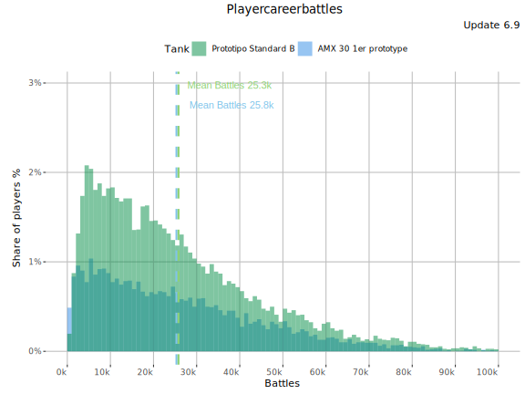
But do the differences in the tanks' playerbases explain the difference in Average WR differences or not?
Introducing Relative WR
To separate the players' skill-level distribution from tank performance, we need to compare players' WR in a tank to their skill-level. As explained above, I have chosen Average WR at the Tier as the measure for player skill. Blitzstars' Tank-Compare uses players' average WR (on any tier) as a measure for player skill in its Relative WR graphs. I have chose to use the WR at the tier in question to eliminate the impact of low-tier stat padding.
Relative WR(tank) = Average(WR in a tank - Player’s WR at the Tier)
In a nutshell, Relative WR shows how much more/less the players are winning with the tank vs. their tier average. The higher the Relative WR, the stronger the tank is.
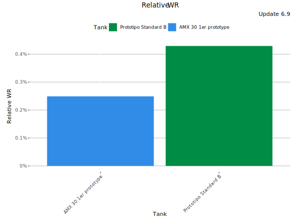
| Tank | Average WR | WR at Tier | Relative WR | Players |
|---|---|---|---|---|
| Prototipo Standard B | 52.6% | 52.2% | 0.43% | 7 956 |
| AMX 30 1er prototype | 56.9% | 56.7% | 0.25% | 3 570 |
The Relative WR graph above shows that players perform a bit better with Standard B than the AMX when compared to their tier IX average. The AMX’s average WR is far higher than the Standard B’s, but its playerbase is far better too - on average. when the differences in the playerbase are taken into account, the difference becomes small and to the Standard B’s advantage. The difference IS statistically significant See significance testing below.
Premium tanks and new higher tier tank lines are often played by better players than average. This distorts the average WR of those tanks and makes people regard the tanks as OP whereas the fundamental reason can be that the tanks are just being played by better players. Yes, there are many borderline-OP & ridiculously-broken premium tanks, but the Relative WR analysis allows us to separate tank performance from skill-level differences in the tanks' playerbases.
TL;DR: Relative WR measures how much higher/lower WR players achieve in a tank vs. their average WR at the same tier.
OK, is this wall of text over now? Nope.
Performance within player skill category
The data shows that the Standard B’s Relative WR is slightly higher than the AMX 30 1er prototype’s - on average - although the difference is not strictly statistically significant. The caveat here is the words on average. How about performance in the hands of below/above average players? Some tanks are known to be difficult for less-skilled players, but well performing in the hands of more skilled players.
Let’s see how the Standard B and the AMX perform when played by different player skill categories.
Performance in the hands of super-good players (WR at tier >70%)
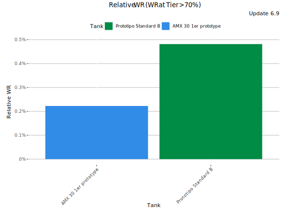
| Tank | Relative WR | Players |
|---|---|---|
| AMX 30 1er prototype | 0.22% | 267 |
| Prototipo Standard B | 0.48% | 158 |
Standard B seems to perform better than the AMX in the hands of super-good players. However, the player sample is on the small side and the difference is not statistically significant (see below).
Performance in the hands of very good players (WR at tier 60-70%)
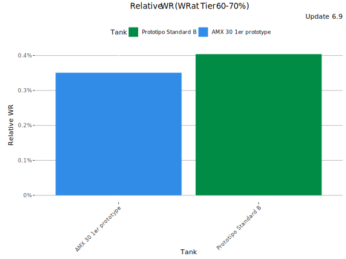
| Tank | Relative WR | Players |
|---|---|---|
| Prototipo Standard B | 0.4% | 1 029 |
| AMX 30 1er prototype | 0.35% | 1 022 |
When considering only players with 60-70% WR at tier IX, Standard B is still slightly better, but the margin is minuscule. The p-value is 0.8 so the difference is not statistically significant at any reasonable confidence level.
Performance in the hands of good players (WR at tier 50-60%)
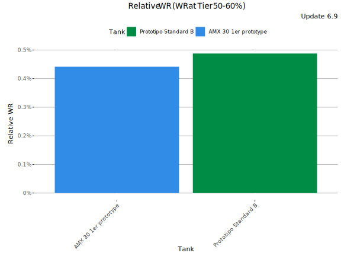
| Tank | Relative WR | Players |
|---|---|---|
| Prototipo Standard B | 0.49% | 3 570 |
| AMX 30 1er prototype | 0.44% | 1 485 |
For this player category the results have reversed again, and Standard B performs bit better vs. the AMX. This is a large player category in the overall dataset, but still the difference is not statistically significant (p-value is 0.78).
Performance in the hands of below-average players (WR at tier 40-50%)
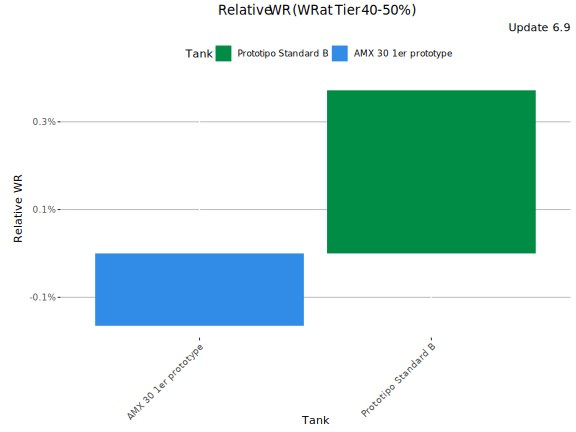
| Tank | Relative WR | Players |
|---|---|---|
| Prototipo Standard B | 0.37% | 2 905 |
| AMX 30 1er prototype | -0.16% | 682 |
When analyzing players with 40-50% WR at tier IX, Standard B performance clearly better. Considering that this is a large player group, it is easy to understand why Standard B’s average Relative WR is higher than the AMX’s. My guess is that it is the Standard B’s burst DPM that helps the below average players, where as AMX requires more skill in e.g. ridge fighting to perform, even it is a very good tank in the hands of a skilled player. Also, for this player group, the difference in Relative WR is statistically significant (p-value 0.015).
Performance in the hands of well below-average players (WR at tier <40%)
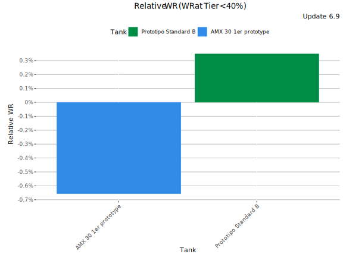
| Tank | Relative WR | Players |
|---|---|---|
| Prototipo Standard B | 0.35% | 292 |
| AMX 30 1er prototype | -0.66% | 112 |
Here the difference in Relative WR turns even larger between the tanks. Standard B seems to perform significantly better for players with below-average skills. Again, I suspect the reason being the burst damage. Even the sample size is getting small the difference IS statistically significant (p-value 0.044)).
Final words
As you can see, the question of tanks' performance is not that straightforward. Even though average WR is such a common measure for tanks' performance, it fails to separate the impact of the different playerbases from the underlying tank performance. And even when comparing tank’s (average) Relative WR it only answers to the question in average - not for very good player or well-below average player.
To understand how does a tank perform in the hands of certain skill-level players, the Relative WR analysis can still come handy as it can be run for a specific skill-level players only. Again, the numbers are averages and there are always players who are relatively better on one tank vs other. But the Relative WR analysis per skill-level can help a player to choose tanks they are more likely to perform better with.
In case of the AMX 30 1er prototype and Standard B, the differences between the tank performance are mostly insignificant, but not far from being statistically significant. As anyone skilled player who has played those, both the tanks are good. I would call it a draw here since there are far larger imbalances in the game.
The graph below shows Relative WR for both the tanks as a function of players' average WR at the tier (IX). The grey area shows the share of players with particular WR at the tier in the dataset. Small sample sizes are likely to cause errors in both the ends of the graph.
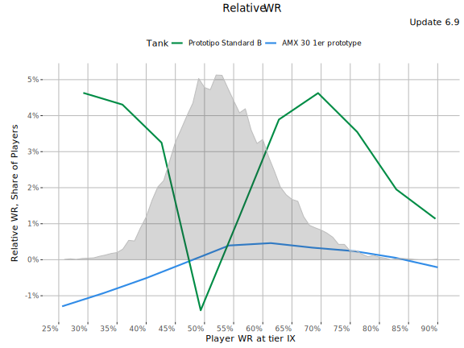
I find it surprising there were differences between the tanks' performance in the 60-70% and 70%+ WR player segments. The absolute differences are not that big and this could go into statistical error tolerances. What may explain the result is the fact that player skill follows broadly normal distribution, thus there are more players with (tier) WR closer to 50% than further away from it. Therefore the 60-70% WR player segment consist of mostly 60-65% players vs. 65-70% players. And there is quite a difference skill still between 60-65% and 70%+ players as I can observe every time I watch e.g. Juicy Tender Steak or Sk8xtrm playing tanks.
That’s all folks - this time
-

This work is licensed under a Creative Commons Attribution-ShareAlike 4.0 International License.
-

-

Blitzanalysiz() is a player-created website for World of Tanks: Blitz and developed in accordance with WG DPP. This site is not an official Wargaming or World of Tanks: Blitz website. World of Tanks Blitz and Wargaming are trademarks of Wargaming.net Limited. Game content and materials copyright © Wargaming.net. All rights reserved.